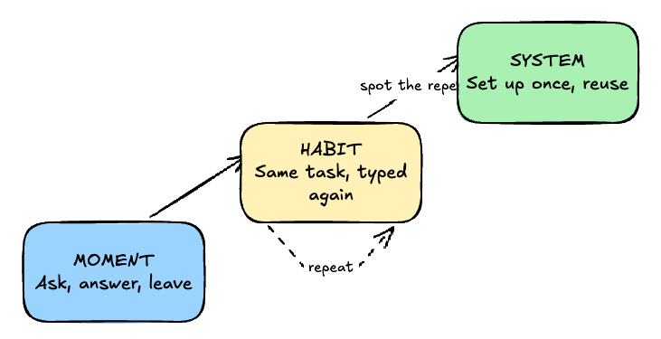

Moment, Habit, System: Where Are You With AI?

Almost everyone I know uses AI now. But very few get more from it each month than they did the month before. The difference comes down to one simple habit.
I spend a lot of time helping people get started with AI. And the more I do it, the more I see the same pattern. It's not about who uses AI and who doesn't. Almost everyone uses it now. It's about what happens after the answer.
I'm not the first to notice this
Other people see the same split. A Tom's Guide writer described two kinds of users: the "searcher," who uses AI like Google, and the "architect," who builds with it. Microsoft's research puts a number on it. They call the top group "Frontier Professionals," and it's only about 19% of users. Writer Alberto Romero goes further: he says the main reason so few people get real value is that most don't know how to plug AI into the work they already do.
And Ethan Mollick, the Wharton professor, makes a point I agree with. His "centaurs" and "cyborgs" are not personality types. They are ways of working that people switch between.
So the gap is real, and it's well documented. What I want to add is a simple way to see where you are, and what your next step looks like.
The test: what have you asked AI more than once?
Here's the line I use. Not how smart your prompts are. Not how many tools you use. Just this: do you notice when you repeat yourself?
Moment
You ask a question, take the answer, and leave. AI is a smarter search box. Every conversation starts from zero. This is where most people are, and that's fine. It's a real starting point.
Habit
You come back for the same kinds of tasks. The weekly email. The meeting summary. The social post. AI is part of your routine now. But you still type the same instructions from scratch every time.
System
You notice the repeat and turn it into something reusable: a saved prompt, a workflow, an automation. Now AI does the task the same good way every time. This is where people build products, content engines, and side businesses.
It's a path, not a label. Nobody lives in one stage. I still use AI in the moment all the time. The question is whether you move up when a task keeps coming back.
The Habit stage is where people get stuck
Moving from Moment to Habit happens on its own. You find something useful and you come back.
The hard jump is from Habit to System. Most people don't make it because they never see the repeat. They're busy. Each conversation feels new, even when it isn't. So they spend five minutes re-explaining the same thing, every week, forever.
The fix is not learning to code. It's paying attention. Look at your AI history from the last two weeks. Find the three things you asked more than once. Those three are your first systems.
This is the problem I'm working on with Quick Actions, a small app I'm building. You save the prompts you keep repeating as one-tap actions, so the Habit stage stops costing you time. It's in beta, and if you're in that middle stage, it's built for you.
What this looks like for me
I use AI to build products, write content, and run tasks that keep coming back. The biggest gains didn't come from better prompts. They came from noticing what I did over and over, and setting it up once. I didn't get smarter at AI. I just stopped starting from zero.
If I had to tell a friend one thing, it would be this: the next time you ask AI something you've asked before, stop. That's your first system waiting to be built.